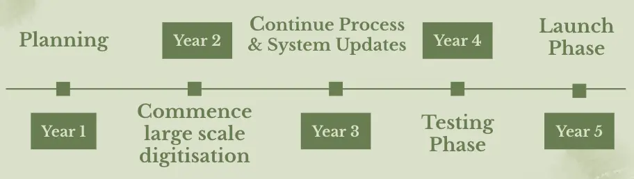

PLANNING
Year 1 will focus on planning, which includes establishing governance (defining roles and responsibilities, stakeholder management, risk management, budget and schedule)

Now we've talked about a lot of different strategies to implement to meet our business requirements, but how do we plan on delivering the project within the 5 year timeline.
Year 1 will focus on planning, which includes establishing governance (defining roles and responsibilities, stakeholder management, risk management, budget and schedule)
Alongside setting up the IT infrastructure and identifying the lost objects, as well as, having training programs so all staff are up to date and new staff can get adequate training.
Furthermore, later in the first year pilot projects will begin to ensure the technology and digitisation of objects can work before implementing on a mass scale.
Year 2 we will be ready to commence large scale digitisation for all objects. All objects will have barcodes, and get ready to scan into system.
Year 3, continue large scale digitisation. System updates, mainly ensuring that there is offline capabilities to download stuff to meet the requirement for those remote locations.
Year 4, testing phase, where the testing process will be ready to be released, to help find improvements and fixes that need to be made.
Year 5, initial access, feedback a future road map and advertisements, to begin getting people aware of the new digital platform.
Now the big question, how much is this project going to cost? Well, its definitely not a small task and it isn’t a cheap project. Based on my research and estimates, for a world scale project like this to digitise our estimated budget would be $150-200 million dollars. This estimate is based of a previous project done at the American History Museum, where they spent time and money setting up the right high quality equipment, which now they are able to rapid scan and digitise sheets of paper at under $1 per sheet. Following a similar structure ensuring we have spent time and money in first few years on all the high-quality cameras, 3D imaging and the scanning process. With 25 million objects with a vary of different objects but if we estimate on average $3 per object, total ~$75 million.
$30 Million Dollars - 3D imaging machines, warehouses to operate cameras, high quality cameras.
$10 million
$20 Million Dollars
$20 Million - In case anything goes wrong.
To help with costs The World Museum will also rely on volunteers and contributions from public. Additionally, on the release if cost is too high, to help a paid subscription can be set up to access the database. For example, a sample will be of course free to the public, but for those history enthusiasts wanted to deep dive into the archives and learn more, there can be a subscription set up for those customers.